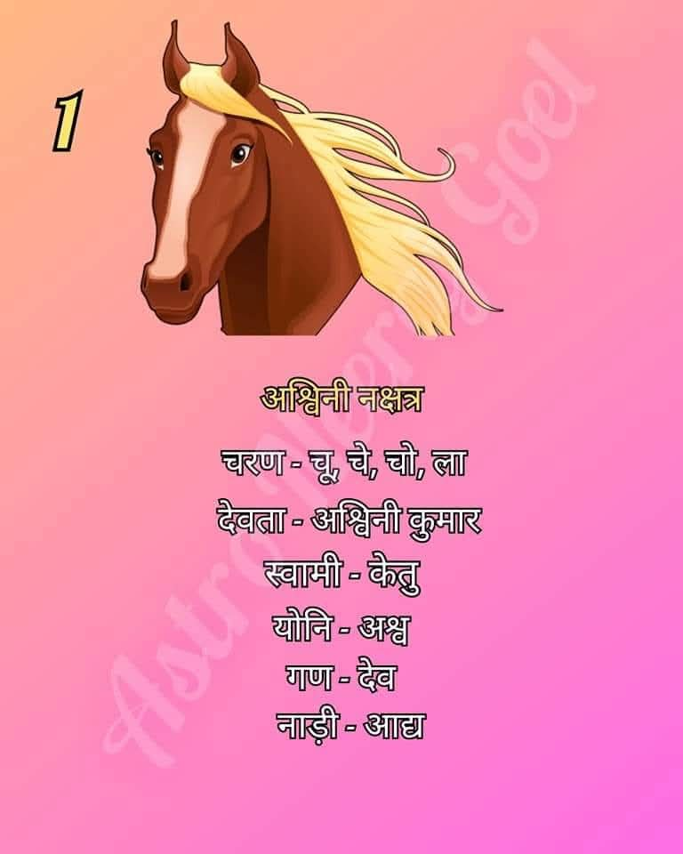

अश्विनी नक्षत्र ग्रहों के राजा सूर्य के पुत्र 'अश्विनी कुमार' के नाम पर है, जिन्हें देवताओं का चिकित्सक माना जाता है। यह नक्षत्र मेष राशि के अंतर्गत आता है और इसका स्वामी केतु है।
अश्विनी नक्षत्र में जन्मे जातक अत्यंत ऊर्जावान, मेहनती और जोश से भरपूर होते हैं। इन्हें बड़े और कठिन कार्यों को करने में विशेष आनंद आता है। साहसी और निडर स्वभाव के कारण ये किसी भी काम को करने में पीछे नहीं हटते।
शिक्षा के क्षेत्र में ये लोग काफी आगे रहते हैं। इनके स्वभाव और ग्रहों के प्रभाव को देखते हुए, ये निम्नलिखित क्षेत्रों में अधिक सफल होते हैं: